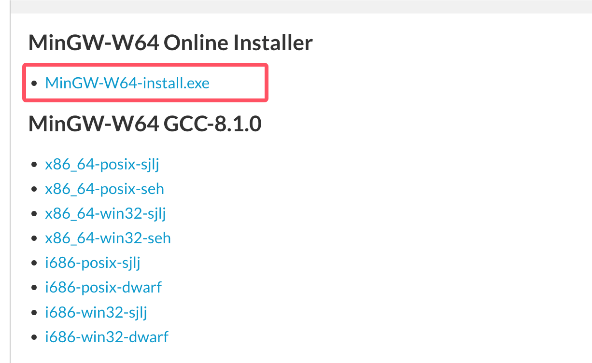
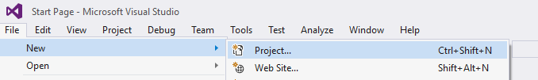
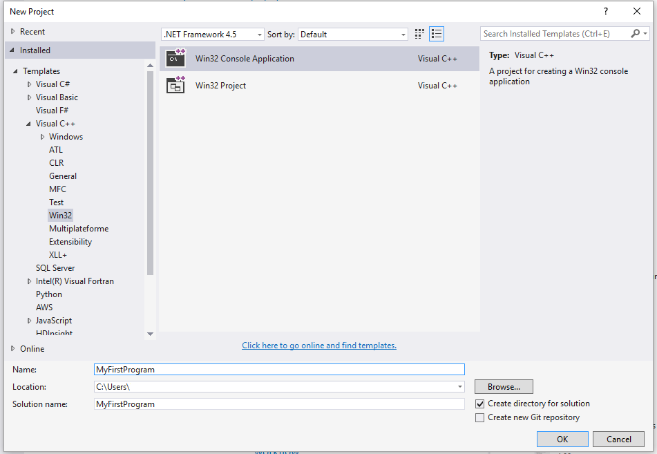
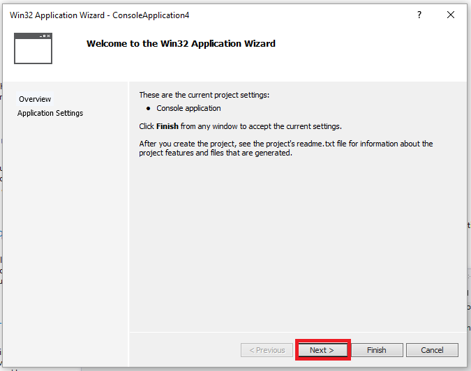
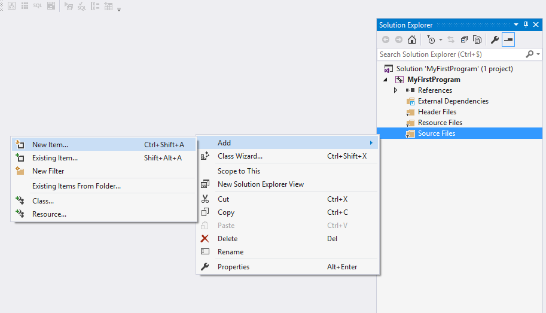
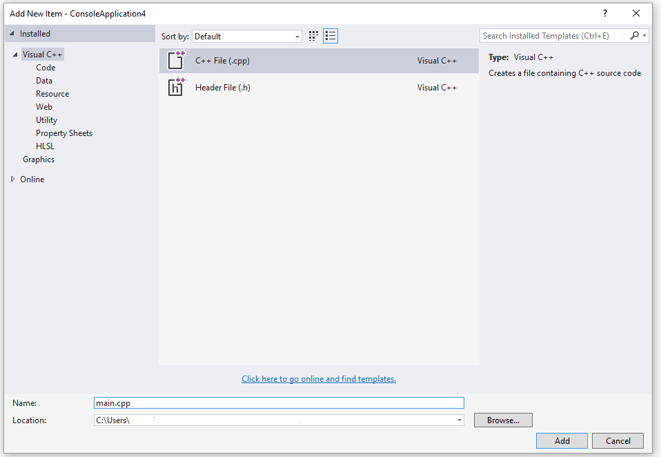
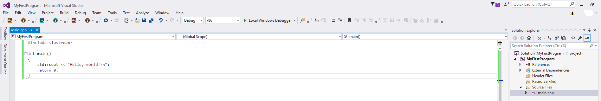
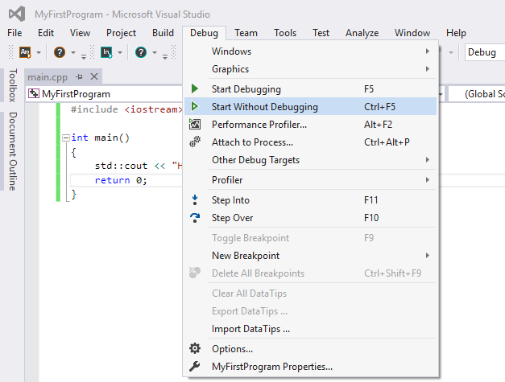
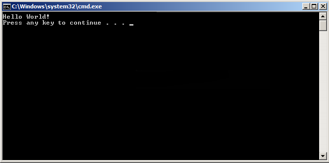

C++ 環境設定
C++ 言語環境を設定したい場合は、コンピュータに次の2つのソフトウェア、テキストエディタと C++ コンパイラがインストールされていることを確認する必要があります。
テキストエディタ
エディタで作成されたファイルは通常ソースファイルと呼ばれ、ソースファイルにはプログラムのソースコードが含まれています。
C++ プログラムのソースファイルは通常、拡張子を使用します。.cpp、.cp 或 .c。
プログラミングを始める前に、テキストエディタがあり、コンピュータプログラムを作成する十分な経験があることを確認してください。そしてそれをファイルに保存し、コンパイルして実行してください。
Visual Studio Code：これは汎用テキストエディタですが、C/C++ 開発をサポートする多くのプラグインがあり、人気のある選択肢となっています。C/C++ プラグインをインストールして設定を調整することで、優れた C 言語開発環境にすることができます。
インストールチュートリアル：https://www.example.com/w3cnote/vscode-tutorial.html
ダウンロード先：https://code.visualstudio.com/
Visual Studio：.NET および C++ 開発者向けの総合的な Windows 版 IDE で、Web、クラウド、デスクトップ、モバイルアプリ、サービス、ゲームの構築に使用できます。
ダウンロード先：https://visualstudio.microsoft.com/zh-hans/downloads/。
VimとEmacs：これらは伝統的なテキストエディタであり、強力な編集機能と高度なカスタマイズ性を備えています。熟練したユーザーにとって非常に強力で、C言語の開発をサポートする多くのプラグインや設定があります。
Eclipse：Eclipse はもう1つの強力な統合開発環境です。当初は Java 開発用に設計されましたが、C/C++ プラグインをインストールすることで C 言語開発をサポートできます。
その他の関連ツール
C++ コンパイラ
ソースファイルに書かれたソースコードは人間が読めるソースです。それを「コンパイル」して機械語に変換する必要があります。そうすることで CPU が指定された命令に従ってプログラムを実行できます。
C++ コンパイラは、ソースコードを最終的な実行可能プログラムにコンパイルするために使用されます。
ほとんどの C++ コンパイラはソースファイルの拡張子を気にしませんが、拡張子を指定しない場合はデフォルトで使用されます。.cpp。
最も一般的に使用される無料のコンパイラは GNU の C/C++ コンパイラです。HP や Solaris を使用している場合は、それぞれのオペレーティングシステム上のコンパイラを使用できます。
以下のセクションでは、さまざまなオペレーティングシステムに GNU の C/C++ コンパイラをインストールする方法を説明します。ここで C/C++ と同時に言及しているのは、主に GNU の gcc コンパイラが C および C++ プログラミング言語に適しているためです。
UNIX/Linux へのインストール
使用しているOSがLinux または UNIX の場合、コマンドラインで次のコマンドを使用して、システムに GCC がインストールされているかどうかを確認してください：
$ g++ -v
お使いのコンピュータに GNU コンパイラがインストールされている場合は、次のようなメッセージが表示されます：
Using built-in specs. Target: i386-redhat-linux Configured with: ../configure --prefix=/usr ....... Thread model: posix gcc version 4.1.2 20080704 (Red Hat 4.1.2-46)
GCC がインストールされていない場合は、https://gcc.gnu.org/install/の詳細な説明に従って GCC をインストールしてください。
Mac OS X へのインストール
Mac OS X を使用している場合、GCC を入手する最も迅速な方法は、Apple の Web サイトから Xcode 開発環境をダウンロードし、インストール手順に従ってインストールすることです。Xcode をインストールすると、GNU コンパイラを使用できます。
Xcode は現在、https://developer.apple.com/downloadからダウンロードでき、Apple ID でのログインが必要です。
Windows へのインストール
Cygwin
Cygwin は、Windows オペレーティングシステム上で Unix/Linux 環境をエミュレートするソフトウェアパッケージであり、ユーザーが Windows 上で Unix 系のツールやアプリケーションを使用できるようにします。
Cygwin は、一連の DLL（ダイナミックリンクライブラリ）を提供することで、これらの DLL が Unix システムコール層と Windows カーネル間のブリッジとして機能し、Unix プログラムを Windows システム上で実行できるようにします。
Cygwin 公式サイト：https://www.cygwin.com/。
公式サイトでインストールパッケージをダウンロードします：

ダウンロードが完了したら、ダウンロードしたファイルをダブルクリックします：

その後は [次へ(Next)] をクリックし続けます:


ここでは、NetEase オープンソースミラーと Alibaba Cloud ミラーを追加できます。https://mirrors.aliyun.com/cygwin/：

インストールが完了すると、デスクトップにアイコンが生成されます：

アイコンをダブルクリックしてコマンドラインインターフェースに入り、cygcheck -c cygwinコマンドを入力すると、現在の Cygwin のバージョン情報を確認できます：

次に gcc/g++ のコンパイル環境をインストールします。コマンドラインで setup-x86_64.exe のディレクトリに移動し、次のコマンドを実行します：
setup-x86_64.exe -q -P wget -P gcc-g++ -P make -P diffutils -P libmpfr-devel -P libgmp-devel -P libmpc-devel
インストールが完了したら、Cygwin64 ターミナルに入り、gcc --versionコマンドを入力するとバージョン情報を確認できます。
MinGW-w64
Windows に GCC をインストールするには、MinGW-w64 をインストールする必要があります。
MinGW-w64 はオープンソースプロジェクトであり、Windows システムに完全な GCC ツールチェーンを提供し、32 ビットおよび 64 ビットの Windows アプリケーションのコンパイルをサポートします。
MinGW-w64 のホームページにアクセスし、mingw-w64.orgMinGW のダウンロードページに入ります。https://www.mingw-w64.org/downloads/最新バージョンの MinGW-w64 インストーラをダウンロードします。
Github からもダウンロードできます：https://github.com/niXman/mingw-builds-binaries/releases
MinGW-w64 のダウンロード詳細ページには、MinGW-w64 や特定のツールの統合パッケージが多数含まれています：

MinGW-w64 だけをインストールするので、MinGW-w64 をダウンロードするだけで済みます。赤い枠の「SourceForge」ハイパーリンクをクリックすると、SourceForge の MinGW-w64 ダウンロードページに入ります。
SourceForge で MinGW-w64 をダウンロードします：https://sourceforge.net/projects/mingw-w64/files/

ページを下にスクロールして、インストーラをダウンロードします：

このインストールではネットワーク接続エラーが発生する可能性があるため、sjlj（安定版で、64 ビットと 32 ビットの両方をサポート）を直接ダウンロードできます：
ダウンロードが完了したら解凍し、bin ディレクトリ内に g++.exe または gcc.exe があります。

MinGW をインストールする際は、少なくとも gcc-core、gcc-g++、binutils、MinGW runtime をインストールする必要がありますが、通常は他の項目も多くインストールします。
インストールした MinGW の bin サブディレクトリを、PATH環境変数に追加します。これにより、コマンドラインで簡単な名前でこれらのツールを指定できます。

インストールが完了すると、Windows のコマンドラインから gcc、g++、ar、ranlib、dlltool およびその他の GNU ツールを実行できます。
Visual Studio (Graphical Interface) を使用したコンパイル
1、ダウンロードとインストールVisual Studio のダウンロード。

2、Visual Studio Community を開く
3、File -> New -> Project をクリック

4、左側のリストで Templates -> Visual C++ -> Win32 Console Application を選択し、プロジェクト名を MyFirstProgram に設定します。

5、OK をクリックします。
6、次のウィンドウで Next をクリックします

7、表示されたウィンドウで Empty project オプションを選択し、Finish ボタンをクリックします：
8、Source File フォルダーを右クリックし、Add --> New Item... をクリックします：

9、C++ File を選択し、ファイル名を main.cpp に設定して、Add をクリックします：

10、以下のコードを main.cpp にコピーします：
#include <iostream>
int main()
{
std::cout << "Hello World!\n";
return 0;
}
インターフェースは次のようになります：

11、メニューの Debug -> Start Without Debugging をクリックします（または ctrl + F5 を押します）：

12、上記の操作が完了すると、次の出力が表示されます：

g++ の使用方法
プログラム g++ は、gcc のデフォルト言語を C++ に設定した特別なバージョンです。リンク時に C 標準ライブラリではなく C++ 標準ライブラリを自動的に使用します。ソースコードの命名規則に従い、対応するライブラリ名を指定することで、gcc を使用して C++ プログラムをコンパイルおよびリンクすることも可能です。次の例のようになります：
$ gcc main.cpp -lstdc++ -o main
以下は、helloworld.cpp ファイルに保存された簡単な C++ プログラムのコードです：
#include <iostream>
using namespace std;
int main()
{
cout << "Hello, world!" << endl;
return 0;
}
最も簡単なコンパイル方法：
$ g++ helloworld.cpp
コマンドラインで実行可能プログラムのファイル名を指定しない場合、コンパイラはデフォルトの a.out を使用します。プログラムは次のように実行できます：
$ ./a.out Hello, world!
通常は使用します-oオプションで実行可能プログラムのファイル名を指定します。次の例では、helloworld という実行可能ファイルを生成します：
$ g++ helloworld.cpp -o helloworld
helloworld を実行します：
$ ./helloworld Hello, world!
複数の C++ コードファイル（サンプル1.cpp、サンプル2.cpp など）の場合、コンパイルコマンドは次のとおりです：
$ g++ サンプル1.cpp サンプル2.cpp -o サンプル
サンプル 実行可能ファイルが生成されます。
g++ は一部のシステムではデフォルトで C++98 を使用します。C++11 を指定して main.cpp ファイルをコンパイルすることができます：
g++ -g -Wall -std=c++11 main.cpp
g++ の一般的なコマンドオプション
| オプション | 説明 |
|---|---|
| -ansi | ANSI 標準の C 構文のみをサポートします。このオプションは、GNU C の一部の機能（asm や typeof キーワードなど）を無効にします。 |
| -c | コンパイルのみ行い、オブジェクトファイルを生成します。 |
| -DMACRO | 文字列 "1" で MACRO マクロを定義します。 |
| -DMACRO=DEFN | 文字列 "DEFN" で MACRO マクロを定義します。 |
| -E | C プリプロセッサのみを実行します。 |
| -g | デバッグ情報を生成します。GNU デバッガはこの情報を利用できます。 |
| -IDIRECTORY | 追加のヘッダファイル検索パス DIRECTORY を指定します。 |
| -LDIRECTORY | 追加の関数ライブラリ検索パス DIRECTORY を指定します。 |
| -lLIBRARY | リンク時に指定された関数ライブラリ LIBRARY を検索します。 |
| -m486 | 486 向けにコードを最適化します。 |
| -o | FILE は指定した出力ファイルを生成します。実行可能ファイルの生成時に使用します。 |
| -O0 | 最適化処理を行いません。 |
| -O | または -O1 でコードを最適化して生成します。 |
| -O2 | さらに最適化します。 |
| -O3 | -O2 よりもさらに最適化します。inline 関数も含みます。 |
| -shared | 共有オブジェクトファイルを生成します。通常、共有ライブラリを作成するときに使用します。 |
| -static | 共有リンクの使用を禁止します。 |
| -UMACRO | MACRO マクロの定義を解除します。 |
| -w | 警告情報を一切生成しません。 |
| -Wall | すべての警告情報を生成します。 |